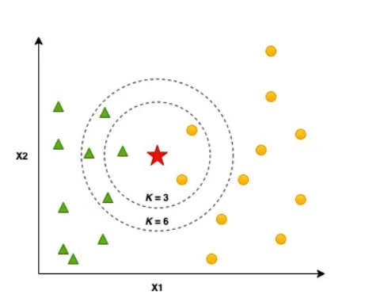
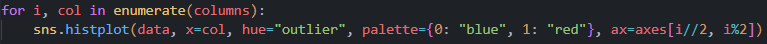

Macam-macam tipe data dan Konsep dasar KNN#
Macam-Macam Tipe Data dalam Data Mining#
1. Atribut Kualitatif#
Atribut kualitatif merepresentasikan kategori atau karakteristik suatu objek yang tidak berupa angka. Data ini digunakan untuk mengelompokkan objek berdasarkan kesamaan karakteristik dan tidak dapat dihitung secara matematis.
a. Nominal (Kategorikal)
Atribut nominal hanya digunakan untuk memberi label atau kategori pada suatu objek tanpa memiliki urutan atau tingkatan tertentu. Data ini tidak memiliki makna numerik dan tidak dapat dilakukan operasi matematika seperti penjumlahan atau pengurangan.
Contoh:
Warna rambut: Hitam, Coklat, Pirang
Jenis kelamin: Laki-laki, Perempuan
Merek kendaraan: Toyota, Honda, BMW
b. Ordinal
Atribut ordinal memiliki kategori dengan urutan atau tingkatan tertentu, tetapi jarak antar kategori tidak bisa diukur secara pasti.
Contoh:
Tingkat pendidikan: SD, SMP, SMA, S1, S2, S3
Tingkat kepuasan pelanggan: Sangat Puas, Puas, Netral, Tidak Puas, Sangat Tidak Puas
Risiko investasi: Rendah, Sedang, Tinggi
c. Biner
Atribut biner hanya memiliki dua kemungkinan nilai, seperti 0 dan 1, atau Ya dan Tidak.
Contoh:
Status pernikahan: Menikah (1), Belum Menikah (0)
Kepemilikan rumah: Ya (1), Tidak (0)
Hasil tes COVID-19: Positif (1), Negatif (0)
Atribut biner dapat dibedakan menjadi:
Simetris: Kedua nilai memiliki kepentingan yang sama, misalnya jenis kelamin (Laki-laki/Perempuan).
Asimetris: Salah satu nilai lebih penting dari yang lain, misalnya dalam deteksi penipuan, 1 berarti transaksi mencurigakan (lebih penting), sementara 0 berarti normal.
2. Atribut Kuantitatif#
Atribut kuantitatif merepresentasikan nilai numerik yang dapat dihitung dan dianalisis secara matematis.
a. Diskrit
Atribut diskrit hanya bisa memiliki nilai dalam jumlah terbatas, biasanya dalam bentuk bilangan bulat yang diperoleh dari hasil perhitungan (counting).
Contoh:
Jumlah anak dalam keluarga: 0, 1, 2, 3, …
Jumlah kendaraan di parkiran: 5, 10, 15
Jumlah siswa dalam kelas: 25, 30, 35
b. Kontinu
Atribut kontinu memiliki nilai yang dapat berupa pecahan atau desimal karena diperoleh dari hasil pengukuran (measurement).
Contoh:
Tinggi badan: 165.3 cm, 170.5 cm
Berat badan: 60.5 kg, 75.8 kg
Suhu udara: 28.7°C, 35.2°C
Pengertian Algoritma K-Nearest Neighbor (KNN)#
1. Apa itu Nearest Neighbor?#
Nearest Neighbor atau k-Nearest Neighbor (kNN) merupakan salah satu algoritme klasifikasi dalam data mining yang memanfaatkan data terdekat untuk melakukan prediksi pada data baru yang belum dikenal (data uji). Algoritme ini bekerja dengan cara mencari sejumlah tetangga terdekat dari data uji dan menentukan kelas data uji tersebut berdasarkan mayoritas kelas dari tetangga terdekat (data latih) yang ditemukan. Nearest Neighbor dapat digunakan untuk menangani berbagai jenis data, baik data numerik maupun kategorikal. Pada data kategorikal, perhitungan jarak perbedaan atau kesamaan tidak dapat dihitung menggunakan operasi matematik seperti yang dapat dilakukan pada data numerik. Nearest Neighbor lebih efektif pada data dengan dimensi yang rendah atau sedang. Selain itu, algoritme ini juga efektif untuk dataset dengan jumlah data yang kecil hingga sedang, karena semakin besar jumlah data yang digunakan maka waktu yang dibutuhkan untuk melakukan klasifikasi semakin lama. Tak hanya memiliki kelebihan, kNN juga memiliki kekurangan seperti sensitif terhadap nilai pencilan (outlier) dan ketidakseimbangan kelas (class imbalance). Untuk mempermudah pemahaman kita, perhatikan gambar di bawah ini:

Penjelasan yang hanya berupa teoritis kadang kala sulit untuk kita pahami dengan baik, untuk menghindari hal tersebut kita akan menggunakan contoh kasus untuk menyederhanakan penjelasan sebelumnya. Gambar di atas mengindikasikan sebuah dataset yang memiliki dua kelas, yaitu kelas positif dan negatif. Kelas positif diwakili oleh gambar lingkaran kecil berwarna kuning sedangkan kelas negatif diwakili gambar segitiga berwarna hijau. Pada contoh kasus ini, kita ingin menentukan kelas dari data uji (yang ditunjukkan gambar bintang berwarna merah) menggunakan kNN.
Terlihat gambar di atas menggunakan dua nilai k, yaitu k=3 dan k=6. kNN bekerja dengan mencari sejumlah tetangga terdekat dari data uji yang belum dikenal dan menentukan kelasnya berdasarkan mayoritas kelas tetangga tersebut. Ketika k=3, artinya kita akan mencari tiga tetangga terdekat dari data uji yang belum dikenal. Dalam contoh tersebut, dua dari tiga tetangga terdekat tergolong ke dalam kelas positif dan satu tetangga terdekat tergolong ke dalam kelas negatif. Karena mayoritas kelas tetangga terdekat adalah kelas positif, maka data uji akan diklasifikasikan sebagai kelas positif.
Namun, ketika k=6, artinya kita akan mencari enam tetangga terdekat dari data uji yang belum dikenal. Dalam contoh tersebut, empat dari enam tetangga terdekat tergolong ke dalam kelas negatif dan dua tetangga terdekat tergolong ke dalam kelas positif. Karena mayoritas kelas tetangga terdekat adalah kelas negatif, maka data uji akan diklasifikasikan sebagai kelas negatif. Dalam contoh tersebut, kita dapat melihat bahwa nilai k yang berbeda-beda dapat memberikan hasil klasifikasi yang berbeda pula. Oleh karena itu, pemilihan nilai k yang tepat sangat penting dalam penggunaan algoritme kNN.
2. Alur Kerja Nearest Neighbor#
Nearest Neighbor (NN) adalah salah satu algoritma machine learning yang paling sederhana namun cukup efektif dalam melakukan klasifikasi. Algoritma NN berdasarkan pada konsep “kesamaan” antara data, yang dapat dihitung dengan jarak Euclidean, Manhattan atau Minkowski distance. Pada dasarnya, algoritma ini mencari data latih yang paling mirip dengan data uji yang akan diklasifikasikan, dan memberikan label kelas yang sama dengan data latih tersebut. Secara umum, alur kerja Nearest Neighbor adalah sebagai berikut:
2.1 Tentukan jumlah tetangga terdekat (K) yang akan dipilih#
Pertama-tama, kita harus menentukan nilai K terlebih dahulu untuk algoritme Nearest Neighbor. Penentuan nilai K tidak memiliki rumus pasti, tetapi ada beberapa tips yang dapat dipertimbangkan. Misalnya, jika jumlah kelas adalah genap, disarankan untuk memilih nilai K ganjil, sedangkan jika jumlah kelas adalah ganjil, disarankan memilih nilai K genap. Alasannya adalah jika kita memilih nilai K yang genap pada kasus dengan dua kelas, misalnya kelas A dan B, maka ada kemungkinan hasil dari 4 tetangga terdekat terdiri dari 2 kelas A dan 2 kelas B sehingga hasilnya akan sama, yaitu A atau B. Namun, jika kita memilih nilai K yang ganjil, misalnya 3 atau 5, maka akan ada tetangga terdekat yang lebih banyak jumlahnya, sehingga hasilnya akan lebih variatif.
2.2 Hitung jarak antara data uji dengan semua data latih#
Setelah menentukan nilai K, langkah selanjutnya dalam algoritme Nearest Neighbor adalah menghitung jarak antara data uji dengan semua data latih. Jarak ini dapat dihitung menggunakan berbagai metode, seperti Euclidean distance, Manhattan distance, Minkowski distance, cosine similarity, atau yang lainnya. Dalam perhitungan jarak, setiap fitur pada kedua data akan diperhitungkan dan diakumulasikan menjadi satu skor jarak. Semakin kecil skor jarak, semakin mirip kedua data tersebut. Proses ini akan diulang untuk semua data latih yang tersedia.
2.3 Urutkan data latih berdasarkan jarak dari yang terdekat ke yang terjauh dengan data uji#
Setelah kita menghitung jarak antara data latih dengan data uji menggunakan suatu metrik, langkah selanjutnya adalah mengurutkan data latih berdasarkan jarak dari yang terdekat ke yang terjauh dengan data uji. Dalam hal ini, data latih yang paling dekat dengan data uji akan ditempatkan di bagian atas daftar, sedangkan data latih yang paling jauh akan ditempatkan di bagian bawah daftar. Hal ini dilakukan untuk memudahkan dalam mencari tetangga terdekat dari data uji pada langkah selanjutnya. Dengan mengurutkan data latih berdasarkan jarak, kita dapat memastikan bahwa k-nearest neighbor yang dipilih benar-benar merupakan tetangga terdekat dari data uji.
2.4 Pilih K data dengan jarak terdekat dari data uji#
Setelah data latih diurutkan berdasarkan jarak terdekat dengan data uji, selanjutnya pilih K data dengan jarak terkecil. Banyaknya K di sini berdasarkan jumlah K yang telah ditentukan di awal.
2.5 Hitung frekuensi masing-masing kategori pada K data yang telah dipilih#
Dalam penghitungan frekuensi ini, setiap kategori akan dihitung berapa kali muncul pada K data tersebut dan kemudian dicatat jumlahnya. Dengan mengetahui frekuensi masing-masing kategori, kita dapat menentukan kategori mana yang paling banyak muncul dan kemudian menjadikannya sebagai hasil prediksi untuk data yang sedang dicari kategori-nya.
3. Contoh Kasus#
Kita akan menggunakan dataset diabetes.xlsx sebagai kasus, dimana dataset ini memuat informasi mengenai diabetes yang dikategorikan menjadi positif dan negatif. Seluruh isi tupel dalam dataset ini memiliki tipe data numerik, hal ini karena kita akan melakukan perhitungan jarak dengan menggunakan kNN. Berikut ini adalah tampilan dari dataset tersebut:
nomor |
gula darah |
tekanan darah |
diabetes |
Distance |
|---|---|---|---|---|
1 |
99 |
72 |
0 |
14,32 |
2 |
110 |
92 |
0 |
8,60 |
3 |
153 |
88 |
1 |
48,09 |
4 |
128 |
84 |
1 |
23,02 |
5 |
88 |
68 |
0 |
24,04 |
6 |
156 |
92 |
0 |
51,48 |
7 |
120 |
85 |
1 |
16,16 |
8 |
109 |
70 |
0 |
25,32 |
9 |
140 |
82 |
1 |
15,81 |
10 |
140 |
90 |
1 |
35,36 |
11 |
105 |
85 |
? |
? |
Dalam dataset ini terdapat label dengan dua kategori, yakni 0 untuk hasil negatif dan 1 untuk hasil positif. Terdapat pula sebuah baris data uji yang akan digunakan untuk menentukan apakah hasilnya positif atau negatif. Tujuan dari perhitungan ini adalah untuk mengklasifikasikan data uji tersebut berdasarkan fitur-fitur yang ada dalam dataset. Dengan menggunakan algoritma nearest neighbor, kita akan mencari data pada dataset yang paling mirip dengan data uji dan kemudian menentukan kategori hasilnya berdasarkan label dari data yang mirip tersebut.
Sebelum itu saya akan menjelaskan beberapa metode
Dalam konteks KNN ada tiga metode pengukuran jarak yang sering disebutkan:
Euclidean Distance#
Menghitung jarak “lurus” (garis lurus) antara dua titik. Rumusnya melibatkan akar kuadrat dari jumlah kuadrat perbedaan tiap fitur.
Manhattan Distance#
Menghitung jarak berdasarkan pergerakan di grid (seperti menghitung jarak di kota dengan jalan bersebelahan). Di sini, jarak dihitung sebagai jumlah nilai mutlak perbedaan tiap fitur.
Minkowski Distance#
Merupakan generalisasi dari Euclidean dan Manhattan Distance. Dengan parameter 𝑝 yang bisa disesuaikan, jika 𝑝 = 2maka sama dengan Euclidean, dan jika 𝑝=1 sama dengan Manhattan.
Langkah pertama, kita tentukan parameter K. Misalnya kita buat jumlah tetangga terdekat K=3.
Langkah kedua, kita hitung jarak antara data uji dengan seluruh data latih. Pada kasus ini, perhitungan jarak dilakukan menggunakan teknik Euclidean distance dengan rumus berikut:
Kemudian, kita masukkan dataset yang kita miliki ke dalam persamaan matematika di atas, sehingga diperoleh hasil seperti di bawah ini:
Untuk memudahkan kita dalam menganalisa jarak yang diperoleh setiap data latih dengan data uji, hasil perhitungan di atas akan kita sajikan dalam bentuk tabular seperti berikut:
nomor |
gula darah |
tekanan darah |
diabetes |
Distance |
|---|---|---|---|---|
2 |
110 |
92 |
0 |
8,60232527 |
1 |
99 |
72 |
0 |
14,3178211 |
9 |
120 |
80 |
1 |
15,8113883 |
7 |
99 |
70 |
0 |
16,1554944 |
4 |
128 |
84 |
1 |
23,0217289 |
5 |
88 |
68 |
0 |
24,0416306 |
8 |
109 |
60 |
0 |
25,3179778 |
10 |
140 |
90 |
1 |
35,3553391 |
3 |
153 |
88 |
1 |
48,0936586 |
6 |
156 |
92 |
1 |
51,4781507 |
11 |
105 |
85 |
0 |
Berikutnya, untuk menentukan nilai label pada data uji, kita dapat mencari jarak terdekat dengan data latih pada kumpulan data yang telah tersedia. Caranya adalah dengan melakukan pengurutan data berdasarkan jarak terkecil ke terbesar pada kolom Distance dengan metode ascending. Dengan demikian, data yang memiliki jarak terdekat dengan data uji akan muncul di urutan pertama dalam daftar data terurut tersebut.
nomor |
gula darah |
tekanan darah |
diabetes |
Distance |
|---|---|---|---|---|
2 |
110 |
92 |
0 |
8,60232527 |
1 |
99 |
72 |
0 |
14,3178211 |
9 |
120 |
80 |
1 |
15,8113883 |
7 |
99 |
70 |
0 |
16,1554944 |
4 |
128 |
84 |
1 |
23,0217289 |
5 |
88 |
68 |
0 |
24,0416306 |
8 |
109 |
60 |
0 |
25,3179778 |
10 |
140 |
90 |
1 |
35,3553391 |
3 |
153 |
88 |
1 |
48,0936586 |
6 |
156 |
92 |
1 |
51,4781507 |
11 |
105 |
85 |
0 |
Setelah data diurutkan berdasarkan jarak terkecil hingga tersesar, kemudian kita ambil tiga data dengan jarak terdekat.Pada tabel di atas terlihat data pertama dan kedua masuk ke dalam kategori 0 serta data ketiga masuk dalam kategori 1. Sehingga dapat ditarik kesimpulan bahwa data uji tersebut masuk ke dalam kategori “0” karena dari tiga tetangga terdekat, ada dua data yang masuk kategori 0, sementara hanya ada satu data yang masuk kategori 1.
Perhitungan menggunakan pyhton#
Disini saya memakai Euclidean Distance
Dengan rumus yang sudah tertera di diatas selanjutnya saya akan mengambil data postgre dan mysql dari aiven, tapi sebelum itu saya akan menginstal beberapa library yang saya gunakan untuk mengambil data dan menghubungkan
Berikut penjelasan fungsi dari library yang saya install:
pymysql– Digunakan untuk menghubungkan dan berinteraksi dengan database MySQL menggunakan Python.pandas– Digunakan untuk manipulasi data dalam bentuk tabel (DataFrame), seperti membaca, menulis, dan mengolah dataset.psycopg2– Digunakan untuk menghubungkan Python dengan database PostgreSQL.sqlalchemy– Sebuah library untuk ORM (Object-Relational Mapping), memudahkan interaksi dengan database menggunakan sintaks Python.seaborn– Library visualisasi berbasismatplotlib, digunakan untuk membuat grafik statistik yang menarik.numpy– Library untuk komputasi numerik, memungkinkan operasi pada array dan matriks.scikit-learn– Library machine learning yang digunakan untuk analisis data dan pembuatan model ML seperti KNN.pyod– Digunakan untuk deteksi outlier (anomali) dalam dataset menggunakan berbagai metode.matplotlib– Library untuk membuat grafik dan visualisasi data secara fleksibel.
Semua library ini digunakan untuk membaca, menganalisis, mendeteksi outlier, dan memvisualisasikan data
%pip install pymysql pandas psycopg2 sqlalchemy seaborn numpy pandas scikit-learn pyod matplotlib seaborn python-dotenv
Requirement already satisfied: pymysql in /opt/hostedtoolcache/Python/3.10.18/x64/lib/python3.10/site-packages (1.1.1)
Requirement already satisfied: pandas in /opt/hostedtoolcache/Python/3.10.18/x64/lib/python3.10/site-packages (2.3.0)
Requirement already satisfied: psycopg2 in /opt/hostedtoolcache/Python/3.10.18/x64/lib/python3.10/site-packages (2.9.10)
Requirement already satisfied: sqlalchemy in /opt/hostedtoolcache/Python/3.10.18/x64/lib/python3.10/site-packages (2.0.41)
Requirement already satisfied: seaborn in /opt/hostedtoolcache/Python/3.10.18/x64/lib/python3.10/site-packages (0.13.2)
Requirement already satisfied: numpy in /opt/hostedtoolcache/Python/3.10.18/x64/lib/python3.10/site-packages (2.2.6)
Requirement already satisfied: scikit-learn in /opt/hostedtoolcache/Python/3.10.18/x64/lib/python3.10/site-packages (1.7.0)
Requirement already satisfied: pyod in /opt/hostedtoolcache/Python/3.10.18/x64/lib/python3.10/site-packages (2.0.5)
Requirement already satisfied: matplotlib in /opt/hostedtoolcache/Python/3.10.18/x64/lib/python3.10/site-packages (3.10.3)
Requirement already satisfied: python-dotenv in /opt/hostedtoolcache/Python/3.10.18/x64/lib/python3.10/site-packages (1.1.0)
Requirement already satisfied: python-dateutil>=2.8.2 in /opt/hostedtoolcache/Python/3.10.18/x64/lib/python3.10/site-packages (from pandas) (2.9.0.post0)
Requirement already satisfied: pytz>=2020.1 in /opt/hostedtoolcache/Python/3.10.18/x64/lib/python3.10/site-packages (from pandas) (2025.2)
Requirement already satisfied: tzdata>=2022.7 in /opt/hostedtoolcache/Python/3.10.18/x64/lib/python3.10/site-packages (from pandas) (2025.2)
Requirement already satisfied: greenlet>=1 in /opt/hostedtoolcache/Python/3.10.18/x64/lib/python3.10/site-packages (from sqlalchemy) (3.2.3)
Requirement already satisfied: typing-extensions>=4.6.0 in /opt/hostedtoolcache/Python/3.10.18/x64/lib/python3.10/site-packages (from sqlalchemy) (4.14.0)
Requirement already satisfied: scipy>=1.8.0 in /opt/hostedtoolcache/Python/3.10.18/x64/lib/python3.10/site-packages (from scikit-learn) (1.15.3)
Requirement already satisfied: joblib>=1.2.0 in /opt/hostedtoolcache/Python/3.10.18/x64/lib/python3.10/site-packages (from scikit-learn) (1.5.1)
Requirement already satisfied: threadpoolctl>=3.1.0 in /opt/hostedtoolcache/Python/3.10.18/x64/lib/python3.10/site-packages (from scikit-learn) (3.6.0)
Requirement already satisfied: numba>=0.51 in /opt/hostedtoolcache/Python/3.10.18/x64/lib/python3.10/site-packages (from pyod) (0.61.2)
Requirement already satisfied: contourpy>=1.0.1 in /opt/hostedtoolcache/Python/3.10.18/x64/lib/python3.10/site-packages (from matplotlib) (1.3.2)
Requirement already satisfied: cycler>=0.10 in /opt/hostedtoolcache/Python/3.10.18/x64/lib/python3.10/site-packages (from matplotlib) (0.12.1)
Requirement already satisfied: fonttools>=4.22.0 in /opt/hostedtoolcache/Python/3.10.18/x64/lib/python3.10/site-packages (from matplotlib) (4.58.4)
Requirement already satisfied: kiwisolver>=1.3.1 in /opt/hostedtoolcache/Python/3.10.18/x64/lib/python3.10/site-packages (from matplotlib) (1.4.8)
Requirement already satisfied: packaging>=20.0 in /opt/hostedtoolcache/Python/3.10.18/x64/lib/python3.10/site-packages (from matplotlib) (25.0)
Requirement already satisfied: pillow>=8 in /opt/hostedtoolcache/Python/3.10.18/x64/lib/python3.10/site-packages (from matplotlib) (11.2.1)
Requirement already satisfied: pyparsing>=2.3.1 in /opt/hostedtoolcache/Python/3.10.18/x64/lib/python3.10/site-packages (from matplotlib) (3.2.3)
Requirement already satisfied: llvmlite<0.45,>=0.44.0dev0 in /opt/hostedtoolcache/Python/3.10.18/x64/lib/python3.10/site-packages (from numba>=0.51->pyod) (0.44.0)
Requirement already satisfied: six>=1.5 in /opt/hostedtoolcache/Python/3.10.18/x64/lib/python3.10/site-packages (from python-dateutil>=2.8.2->pandas) (1.17.0)
Note: you may need to restart the kernel to use updated packages.
pymysql
Fungsi: Driver untuk koneksi ke database MySQL menggunakan Python.
Kegunaan: Digunakan oleh SQLAlchemy untuk membuat koneksi ke MySQL.
pandas
Fungsi: Library untuk manipulasi dan analisis data, terutama menggunakan struktur data DataFrame.
Kegunaan: Membaca, mengolah, dan mengekspor data dari berbagai sumber (seperti database, CSV, Excel).
psycopg2
Fungsi: Driver untuk koneksi ke database PostgreSQL.
Kegunaan: Digunakan oleh SQLAlchemy untuk membuat koneksi ke PostgreSQL.
sqlalchemy
Fungsi: Toolkit dan Object Relational Mapper (ORM) untuk Python.
Kegunaan: Memudahkan pembuatan koneksi dan interaksi dengan database menggunakan sintaks Python.
seaborn
Fungsi: Library visualisasi data berbasis matplotlib yang menyediakan antarmuka tingkat tinggi untuk membuat grafik statistik.
Kegunaan: Membantu membuat visualisasi data yang menarik dan informatif dengan sintaks yang lebih sederhana.
numpy
Fungsi: Library untuk komputasi numerik di Python dengan dukungan array multidimensi.
Kegunaan: Dasar bagi banyak operasi numerik dan ilmiah, serta digunakan oleh library lain seperti Pandas dan scikit-learn.
scikit-learn
Fungsi: Library untuk machine learning dan data mining di Python.
Kegunaan: Menyediakan algoritma-algoritma untuk klasifikasi, regresi, clustering, dan pemrosesan data.
pyod
Fungsi: Library Python untuk deteksi outlier (anomaly detection).
Kegunaan: Berguna untuk mengidentifikasi data abnormal atau outlier dalam dataset, sebuah tugas penting dalam data mining.
matplotlib
Fungsi: Library untuk membuat grafik dan visualisasi data di Python.
Kegunaan: Digunakan sebagai dasar untuk visualisasi dan merupakan fondasi bagi library lain seperti seaborn.
python-dotenv
Fungsi: Library untuk memuat variabel lingkungan dari file .env.
Kegunaan: Memudahkan pengelolaan kredensial dan konfigurasi tanpa harus hardcode di dalam kode.
Catatan: Perintah di atas menggunakan
%pip installyang umum digunakan pada lingkungan Jupyter Notebook. Jika kamu menjalankannya di terminal, cukup gunakanpip installdiikuti daftar paketnya.
Secara keseluruhan, perintah ini menginstal paket-paket yang mendukung koneksi database, manipulasi data, analisis statistik, machine learning, visualisasi data, serta pengelolaan variabel lingkungan. Paket-paket ini merupakan fondasi utama untuk membangun proyek data mining atau analisis data di Python.
Import Library#
import os
import pandas as pd
from sqlalchemy import create_engine
from dotenv import load_dotenv
os: Untuk mengakses variabel lingkungan (environment variables).
pandas: Digunakan untuk manipulasi data, meskipun dalam kode ini belum dipakai secara eksplisit.
create_engine dari SQLAlchemy: Untuk membuat koneksi ke database dalam bentuk “engine”.
load_dotenv dari python-dotenv: Untuk memuat file .env agar variabel lingkungan (seperti kredensial database) dapat diakses dalam kode.
Memuat File .env#
load_dotenv()
False
Fungsi load_dotenv() membaca file .env (yang harus berada di direktori yang sama dengan skrip) dan menambahkan variabel-variabel yang ada ke dalam environment sehingga bisa diambil dengan os.getenv().
Konfigurasi Koneksi Database#
postgres_config = {
'host': os.getenv('POSTGRES_HOST'),
'port': os.getenv('POSTGRES_PORT'),
'user': os.getenv('POSTGRES_USER'),
'password': os.getenv('POSTGRES_PASSWORD'),
'database': os.getenv('POSTGRES_DATABASE')
}
mysql_config = {
'host': os.getenv('MYSQL_HOST'),
'port': os.getenv('MYSQL_PORT'),
'user': os.getenv('MYSQL_USER'),
'password': os.getenv('MYSQL_PASSWORD'),
'database': os.getenv('MYSQL_DATABASE')
}
Kode ini membuat dua dictionary, satu untuk PostgreSQL dan satu untuk MySQL.
Masing-masing menggunakan os.getenv() untuk mengambil nilai konfigurasi dari file .env (misalnya, POSTGRES_HOST, POSTGRES_PORT, dll).
postgres_config: Menyimpan konfigurasi untuk koneksi PostgreSQL.
mysql_config: Menyimpan konfigurasi untuk koneksi MySQL.
Menyusun String Koneksi PostgreSQL#
postgres_conn_str = (
f"postgresql+psycopg2://{postgres_config['user']}:{postgres_config['password']}"
f"@{postgres_config['host']}:{postgres_config['port']}/{postgres_config['database']}?sslmode=require"
)
Menggunakan format URL untuk SQLAlchemy dengan driver psycopg2:
Awalan postgresql+psycopg2:// menunjukkan bahwa koneksi menggunakan PostgreSQL dengan driver psycopg2.
{user}:{password}@{host}:{port}/{database}: Menyusun kredensial dan alamat host.
?sslmode=require: Parameter tambahan untuk memaksa koneksi menggunakan SSL.
Menyusun String Koneksi MySQL:#
mysql_conn_str = (
f"mysql+pymysql://{mysql_config['user']}:{mysql_config['password']}"
f"@{mysql_config['host']}:{mysql_config['port']}/{mysql_config['database']}"
)
Mirip dengan PostgreSQL, namun awalan mysql+pymysql:// menunjukkan bahwa koneksi menggunakan MySQL dengan driver pymysql.
String ini menyusun kredensial dan alamat host untuk MySQL.
Membuat Engine Database#
pg_engine = create_engine(postgres_conn_str)
mysql_engine = create_engine(mysql_conn_str)
---------------------------------------------------------------------------
ValueError Traceback (most recent call last)
Cell In[7], line 1
----> 1 pg_engine = create_engine(postgres_conn_str)
2 mysql_engine = create_engine(mysql_conn_str)
File <string>:2, in create_engine(url, **kwargs)
File /opt/hostedtoolcache/Python/3.10.18/x64/lib/python3.10/site-packages/sqlalchemy/util/deprecations.py:281, in deprecated_params.<locals>.decorate.<locals>.warned(fn, *args, **kwargs)
274 if m in kwargs:
275 _warn_with_version(
276 messages[m],
277 versions[m],
278 version_warnings[m],
279 stacklevel=3,
280 )
--> 281 return fn(*args, **kwargs)
File /opt/hostedtoolcache/Python/3.10.18/x64/lib/python3.10/site-packages/sqlalchemy/engine/create.py:549, in create_engine(url, **kwargs)
546 kwargs.pop("empty_in_strategy", None)
548 # create url.URL object
--> 549 u = _url.make_url(url)
551 u, plugins, kwargs = u._instantiate_plugins(kwargs)
553 entrypoint = u._get_entrypoint()
File /opt/hostedtoolcache/Python/3.10.18/x64/lib/python3.10/site-packages/sqlalchemy/engine/url.py:856, in make_url(name_or_url)
840 """Given a string, produce a new URL instance.
841
842 The format of the URL generally follows `RFC-1738
(...)
852
853 """
855 if isinstance(name_or_url, str):
--> 856 return _parse_url(name_or_url)
857 elif not isinstance(name_or_url, URL) and not hasattr(
858 name_or_url, "_sqla_is_testing_if_this_is_a_mock_object"
859 ):
860 raise exc.ArgumentError(
861 f"Expected string or URL object, got {name_or_url!r}"
862 )
File /opt/hostedtoolcache/Python/3.10.18/x64/lib/python3.10/site-packages/sqlalchemy/engine/url.py:917, in _parse_url(name)
914 name = components.pop("name")
916 if components["port"]:
--> 917 components["port"] = int(components["port"])
919 return URL.create(name, **components) # type: ignore
921 else:
ValueError: invalid literal for int() with base 10: 'None'
create_engine() dari SQLAlchemy membuat objek koneksi (engine) berdasarkan string koneksi yang telah disusun.
pg_engine: Engine untuk koneksi PostgreSQL.
mysql_engine: Engine untuk koneksi MySQL.
Blok Try-Finally#
try:
print("sudah terkoneksi")
finally:
pg_engine.dispose()
mysql_engine.dispose()
sudah terkoneksi
try Block:
Mencetak pesan "sudah terkoneksi". Jika tidak terjadi error selama pembuatan engine, maka pesan ini akan tampil, menandakan bahwa koneksi ke kedua database berhasil.
finally Block:
Menutup koneksi dengan memanggil dispose() pada masing-masing engine. Fungsi dispose() memastikan bahwa semua koneksi yang telah dibuat ditutup dengan baik sehingga tidak terjadi kebocoran resource.
Definisikan Query untuk MySQL#
mysql_query = "SELECT * FROM iris_data ORDER BY id;"
df_mysql = pd.read_sql(mysql_query, mysql_engine)
---------------------------------------------------------------------------
gaierror Traceback (most recent call last)
File c:\laragon\bin\python\python-3.10\lib\site-packages\pymysql\connections.py:649, in Connection.connect(self, sock)
648 try:
--> 649 sock = socket.create_connection(
650 (self.host, self.port), self.connect_timeout, **kwargs
651 )
652 break
File c:\laragon\bin\python\python-3.10\lib\socket.py:824, in create_connection(address, timeout, source_address)
823 err = None
--> 824 for res in getaddrinfo(host, port, 0, SOCK_STREAM):
825 af, socktype, proto, canonname, sa = res
File c:\laragon\bin\python\python-3.10\lib\socket.py:955, in getaddrinfo(host, port, family, type, proto, flags)
954 addrlist = []
--> 955 for res in _socket.getaddrinfo(host, port, family, type, proto, flags):
956 af, socktype, proto, canonname, sa = res
gaierror: [Errno 11001] getaddrinfo failed
During handling of the above exception, another exception occurred:
OperationalError Traceback (most recent call last)
File c:\laragon\bin\python\python-3.10\lib\site-packages\sqlalchemy\engine\base.py:146, in Connection.__init__(self, engine, connection, _has_events, _allow_revalidate, _allow_autobegin)
145 try:
--> 146 self._dbapi_connection = engine.raw_connection()
147 except dialect.loaded_dbapi.Error as err:
File c:\laragon\bin\python\python-3.10\lib\site-packages\sqlalchemy\engine\base.py:3298, in Engine.raw_connection(self)
3277 """Return a "raw" DBAPI connection from the connection pool.
3278
3279 The returned object is a proxied version of the DBAPI
(...)
3296
3297 """
-> 3298 return self.pool.connect()
File c:\laragon\bin\python\python-3.10\lib\site-packages\sqlalchemy\pool\base.py:449, in Pool.connect(self)
442 """Return a DBAPI connection from the pool.
443
444 The connection is instrumented such that when its
(...)
447
448 """
--> 449 return _ConnectionFairy._checkout(self)
File c:\laragon\bin\python\python-3.10\lib\site-packages\sqlalchemy\pool\base.py:1263, in _ConnectionFairy._checkout(cls, pool, threadconns, fairy)
1262 if not fairy:
-> 1263 fairy = _ConnectionRecord.checkout(pool)
1265 if threadconns is not None:
File c:\laragon\bin\python\python-3.10\lib\site-packages\sqlalchemy\pool\base.py:712, in _ConnectionRecord.checkout(cls, pool)
711 else:
--> 712 rec = pool._do_get()
714 try:
File c:\laragon\bin\python\python-3.10\lib\site-packages\sqlalchemy\pool\impl.py:179, in QueuePool._do_get(self)
178 except:
--> 179 with util.safe_reraise():
180 self._dec_overflow()
File c:\laragon\bin\python\python-3.10\lib\site-packages\sqlalchemy\util\langhelpers.py:146, in safe_reraise.__exit__(self, type_, value, traceback)
145 self._exc_info = None # remove potential circular references
--> 146 raise exc_value.with_traceback(exc_tb)
147 else:
File c:\laragon\bin\python\python-3.10\lib\site-packages\sqlalchemy\pool\impl.py:177, in QueuePool._do_get(self)
176 try:
--> 177 return self._create_connection()
178 except:
File c:\laragon\bin\python\python-3.10\lib\site-packages\sqlalchemy\pool\base.py:390, in Pool._create_connection(self)
388 """Called by subclasses to create a new ConnectionRecord."""
--> 390 return _ConnectionRecord(self)
File c:\laragon\bin\python\python-3.10\lib\site-packages\sqlalchemy\pool\base.py:674, in _ConnectionRecord.__init__(self, pool, connect)
673 if connect:
--> 674 self.__connect()
675 self.finalize_callback = deque()
File c:\laragon\bin\python\python-3.10\lib\site-packages\sqlalchemy\pool\base.py:900, in _ConnectionRecord.__connect(self)
899 except BaseException as e:
--> 900 with util.safe_reraise():
901 pool.logger.debug("Error on connect(): %s", e)
File c:\laragon\bin\python\python-3.10\lib\site-packages\sqlalchemy\util\langhelpers.py:146, in safe_reraise.__exit__(self, type_, value, traceback)
145 self._exc_info = None # remove potential circular references
--> 146 raise exc_value.with_traceback(exc_tb)
147 else:
File c:\laragon\bin\python\python-3.10\lib\site-packages\sqlalchemy\pool\base.py:896, in _ConnectionRecord.__connect(self)
895 self.starttime = time.time()
--> 896 self.dbapi_connection = connection = pool._invoke_creator(self)
897 pool.logger.debug("Created new connection %r", connection)
File c:\laragon\bin\python\python-3.10\lib\site-packages\sqlalchemy\engine\create.py:646, in create_engine.<locals>.connect(connection_record)
644 return connection
--> 646 return dialect.connect(*cargs, **cparams)
File c:\laragon\bin\python\python-3.10\lib\site-packages\sqlalchemy\engine\default.py:622, in DefaultDialect.connect(self, *cargs, **cparams)
620 def connect(self, *cargs, **cparams):
621 # inherits the docstring from interfaces.Dialect.connect
--> 622 return self.loaded_dbapi.connect(*cargs, **cparams)
File c:\laragon\bin\python\python-3.10\lib\site-packages\pymysql\connections.py:361, in Connection.__init__(self, user, password, host, database, unix_socket, port, charset, collation, sql_mode, read_default_file, conv, use_unicode, client_flag, cursorclass, init_command, connect_timeout, read_default_group, autocommit, local_infile, max_allowed_packet, defer_connect, auth_plugin_map, read_timeout, write_timeout, bind_address, binary_prefix, program_name, server_public_key, ssl, ssl_ca, ssl_cert, ssl_disabled, ssl_key, ssl_key_password, ssl_verify_cert, ssl_verify_identity, compress, named_pipe, passwd, db)
360 else:
--> 361 self.connect()
File c:\laragon\bin\python\python-3.10\lib\site-packages\pymysql\connections.py:716, in Connection.connect(self, sock)
715 print(exc.traceback)
--> 716 raise exc
718 # If e is neither DatabaseError or IOError, It's a bug.
719 # But raising AssertionError hides original error.
720 # So just reraise it.
OperationalError: (2003, "Can't connect to MySQL server on 'rendydevanodanendra-mysql-devano.i.aivencloud.com' ([Errno 11001] getaddrinfo failed)")
The above exception was the direct cause of the following exception:
OperationalError Traceback (most recent call last)
Cell In[9], line 2
1 mysql_query = "SELECT * FROM iris_data ORDER BY id;"
----> 2 df_mysql = pd.read_sql(mysql_query, mysql_engine)
File c:\laragon\bin\python\python-3.10\lib\site-packages\pandas\io\sql.py:704, in read_sql(sql, con, index_col, coerce_float, params, parse_dates, columns, chunksize, dtype_backend, dtype)
701 dtype_backend = "numpy" # type: ignore[assignment]
702 assert dtype_backend is not lib.no_default
--> 704 with pandasSQL_builder(con) as pandas_sql:
705 if isinstance(pandas_sql, SQLiteDatabase):
706 return pandas_sql.read_query(
707 sql,
708 index_col=index_col,
(...)
714 dtype=dtype,
715 )
File c:\laragon\bin\python\python-3.10\lib\site-packages\pandas\io\sql.py:906, in pandasSQL_builder(con, schema, need_transaction)
903 raise ImportError("Using URI string without sqlalchemy installed.")
905 if sqlalchemy is not None and isinstance(con, (str, sqlalchemy.engine.Connectable)):
--> 906 return SQLDatabase(con, schema, need_transaction)
908 adbc = import_optional_dependency("adbc_driver_manager.dbapi", errors="ignore")
909 if adbc and isinstance(con, adbc.Connection):
File c:\laragon\bin\python\python-3.10\lib\site-packages\pandas\io\sql.py:1636, in SQLDatabase.__init__(self, con, schema, need_transaction)
1634 self.exit_stack.callback(con.dispose)
1635 if isinstance(con, Engine):
-> 1636 con = self.exit_stack.enter_context(con.connect())
1637 if need_transaction and not con.in_transaction():
1638 self.exit_stack.enter_context(con.begin())
File c:\laragon\bin\python\python-3.10\lib\site-packages\sqlalchemy\engine\base.py:3274, in Engine.connect(self)
3251 def connect(self) -> Connection:
3252 """Return a new :class:`_engine.Connection` object.
3253
3254 The :class:`_engine.Connection` acts as a Python context manager, so
(...)
3271
3272 """
-> 3274 return self._connection_cls(self)
File c:\laragon\bin\python\python-3.10\lib\site-packages\sqlalchemy\engine\base.py:148, in Connection.__init__(self, engine, connection, _has_events, _allow_revalidate, _allow_autobegin)
146 self._dbapi_connection = engine.raw_connection()
147 except dialect.loaded_dbapi.Error as err:
--> 148 Connection._handle_dbapi_exception_noconnection(
149 err, dialect, engine
150 )
151 raise
152 else:
File c:\laragon\bin\python\python-3.10\lib\site-packages\sqlalchemy\engine\base.py:2439, in Connection._handle_dbapi_exception_noconnection(cls, e, dialect, engine, is_disconnect, invalidate_pool_on_disconnect, is_pre_ping)
2437 elif should_wrap:
2438 assert sqlalchemy_exception is not None
-> 2439 raise sqlalchemy_exception.with_traceback(exc_info[2]) from e
2440 else:
2441 assert exc_info[1] is not None
File c:\laragon\bin\python\python-3.10\lib\site-packages\sqlalchemy\engine\base.py:146, in Connection.__init__(self, engine, connection, _has_events, _allow_revalidate, _allow_autobegin)
144 if connection is None:
145 try:
--> 146 self._dbapi_connection = engine.raw_connection()
147 except dialect.loaded_dbapi.Error as err:
148 Connection._handle_dbapi_exception_noconnection(
149 err, dialect, engine
150 )
File c:\laragon\bin\python\python-3.10\lib\site-packages\sqlalchemy\engine\base.py:3298, in Engine.raw_connection(self)
3276 def raw_connection(self) -> PoolProxiedConnection:
3277 """Return a "raw" DBAPI connection from the connection pool.
3278
3279 The returned object is a proxied version of the DBAPI
(...)
3296
3297 """
-> 3298 return self.pool.connect()
File c:\laragon\bin\python\python-3.10\lib\site-packages\sqlalchemy\pool\base.py:449, in Pool.connect(self)
441 def connect(self) -> PoolProxiedConnection:
442 """Return a DBAPI connection from the pool.
443
444 The connection is instrumented such that when its
(...)
447
448 """
--> 449 return _ConnectionFairy._checkout(self)
File c:\laragon\bin\python\python-3.10\lib\site-packages\sqlalchemy\pool\base.py:1263, in _ConnectionFairy._checkout(cls, pool, threadconns, fairy)
1255 @classmethod
1256 def _checkout(
1257 cls,
(...)
1260 fairy: Optional[_ConnectionFairy] = None,
1261 ) -> _ConnectionFairy:
1262 if not fairy:
-> 1263 fairy = _ConnectionRecord.checkout(pool)
1265 if threadconns is not None:
1266 threadconns.current = weakref.ref(fairy)
File c:\laragon\bin\python\python-3.10\lib\site-packages\sqlalchemy\pool\base.py:712, in _ConnectionRecord.checkout(cls, pool)
710 rec = cast(_ConnectionRecord, pool._do_get())
711 else:
--> 712 rec = pool._do_get()
714 try:
715 dbapi_connection = rec.get_connection()
File c:\laragon\bin\python\python-3.10\lib\site-packages\sqlalchemy\pool\impl.py:179, in QueuePool._do_get(self)
177 return self._create_connection()
178 except:
--> 179 with util.safe_reraise():
180 self._dec_overflow()
181 raise
File c:\laragon\bin\python\python-3.10\lib\site-packages\sqlalchemy\util\langhelpers.py:146, in safe_reraise.__exit__(self, type_, value, traceback)
144 assert exc_value is not None
145 self._exc_info = None # remove potential circular references
--> 146 raise exc_value.with_traceback(exc_tb)
147 else:
148 self._exc_info = None # remove potential circular references
File c:\laragon\bin\python\python-3.10\lib\site-packages\sqlalchemy\pool\impl.py:177, in QueuePool._do_get(self)
175 if self._inc_overflow():
176 try:
--> 177 return self._create_connection()
178 except:
179 with util.safe_reraise():
File c:\laragon\bin\python\python-3.10\lib\site-packages\sqlalchemy\pool\base.py:390, in Pool._create_connection(self)
387 def _create_connection(self) -> ConnectionPoolEntry:
388 """Called by subclasses to create a new ConnectionRecord."""
--> 390 return _ConnectionRecord(self)
File c:\laragon\bin\python\python-3.10\lib\site-packages\sqlalchemy\pool\base.py:674, in _ConnectionRecord.__init__(self, pool, connect)
672 self.__pool = pool
673 if connect:
--> 674 self.__connect()
675 self.finalize_callback = deque()
File c:\laragon\bin\python\python-3.10\lib\site-packages\sqlalchemy\pool\base.py:900, in _ConnectionRecord.__connect(self)
898 self.fresh = True
899 except BaseException as e:
--> 900 with util.safe_reraise():
901 pool.logger.debug("Error on connect(): %s", e)
902 else:
903 # in SQLAlchemy 1.4 the first_connect event is not used by
904 # the engine, so this will usually not be set
File c:\laragon\bin\python\python-3.10\lib\site-packages\sqlalchemy\util\langhelpers.py:146, in safe_reraise.__exit__(self, type_, value, traceback)
144 assert exc_value is not None
145 self._exc_info = None # remove potential circular references
--> 146 raise exc_value.with_traceback(exc_tb)
147 else:
148 self._exc_info = None # remove potential circular references
File c:\laragon\bin\python\python-3.10\lib\site-packages\sqlalchemy\pool\base.py:896, in _ConnectionRecord.__connect(self)
894 try:
895 self.starttime = time.time()
--> 896 self.dbapi_connection = connection = pool._invoke_creator(self)
897 pool.logger.debug("Created new connection %r", connection)
898 self.fresh = True
File c:\laragon\bin\python\python-3.10\lib\site-packages\sqlalchemy\engine\create.py:646, in create_engine.<locals>.connect(connection_record)
643 if connection is not None:
644 return connection
--> 646 return dialect.connect(*cargs, **cparams)
File c:\laragon\bin\python\python-3.10\lib\site-packages\sqlalchemy\engine\default.py:622, in DefaultDialect.connect(self, *cargs, **cparams)
620 def connect(self, *cargs, **cparams):
621 # inherits the docstring from interfaces.Dialect.connect
--> 622 return self.loaded_dbapi.connect(*cargs, **cparams)
File c:\laragon\bin\python\python-3.10\lib\site-packages\pymysql\connections.py:361, in Connection.__init__(self, user, password, host, database, unix_socket, port, charset, collation, sql_mode, read_default_file, conv, use_unicode, client_flag, cursorclass, init_command, connect_timeout, read_default_group, autocommit, local_infile, max_allowed_packet, defer_connect, auth_plugin_map, read_timeout, write_timeout, bind_address, binary_prefix, program_name, server_public_key, ssl, ssl_ca, ssl_cert, ssl_disabled, ssl_key, ssl_key_password, ssl_verify_cert, ssl_verify_identity, compress, named_pipe, passwd, db)
359 self._sock = None
360 else:
--> 361 self.connect()
File c:\laragon\bin\python\python-3.10\lib\site-packages\pymysql\connections.py:716, in Connection.connect(self, sock)
714 if DEBUG:
715 print(exc.traceback)
--> 716 raise exc
718 # If e is neither DatabaseError or IOError, It's a bug.
719 # But raising AssertionError hides original error.
720 # So just reraise it.
721 raise
OperationalError: (pymysql.err.OperationalError) (2003, "Can't connect to MySQL server on 'rendydevanodanendra-mysql-devano.i.aivencloud.com' ([Errno 11001] getaddrinfo failed)")
(Background on this error at: https://sqlalche.me/e/20/e3q8)
mysql_query = "SELECT * FROM iris_data ORDER BY id;"
Query SQL ini mengambil semua baris (SELECT *) dari tabel iris_data di MySQL dan mengurutkannya berdasarkan kolom id
df_mysql = pd.read_sql(mysql_query, mysql_engine)
Fungsi pd.read_sql() menjalankan query tersebut pada engine MySQL (mysql_engine) dan mengembalikan hasilnya sebagai DataFrame (variabel df_mysql).
Definisikan Query untuk postgre#
pg_query = "SELECT * FROM iris_data ORDER BY id;"
df_postgres = pd.read_sql(pg_query, pg_engine)
pg_query = "SELECT * FROM iris_data ORDER BY id;"
Sama seperti query untuk MySQL, query ini mengambil semua baris dari tabel iris_data di PostgreSQL dan mengurutkannya berdasarkan id.
df_postgres = pd.read_sql(pg_query, pg_engine)
Fungsi ini menjalankan query pada engine PostgreSQL (pg_engine) dan hasilnya disimpan dalam DataFrame df_postgres
Menampilkan Data#
print("Data dari MySQL:")
Mencetak judul untuk data yang diambil dari MySQL.
print(df_mysql)
Menampilkan DataFrame yang berisi hasil query dari MySQL.
print("\nData dari PostgreSQL:")
Mencetak judul untuk data yang diambil dari PostgreSQL dengan menambahkan newline (\n) agar output menjadi lebih rapi.
print(df_postgres)
Menampilkan DataFrame hasil query dari PostgreSQL.
print("Data dari MySQL:")
print(df_mysql)
print("\n Data dari PostgreSQL:")
print(df_postgres)
Data dari MySQL:
id class petal_length petal_width
0 1 Iris-setosa 70.0 86.4
1 2 Iris-setosa 1.4 0.2
2 3 Iris-setosa 1.3 0.2
3 4 Iris-setosa 1.5 0.2
4 5 Iris-setosa 1.4 0.2
.. ... ... ... ...
145 146 Iris-virginica 5.2 2.3
146 147 Iris-virginica 5.0 1.9
147 148 Iris-virginica 5.2 2.0
148 149 Iris-virginica 5.4 2.3
149 150 Iris-virginica 5.1 1.8
[150 rows x 4 columns]
Data dari PostgreSQL:
id class sepal_length sepal_width
0 1 Iris-setosa 20.1 30.5
1 2 Iris-setosa 4.9 3.0
2 3 Iris-setosa 4.7 3.2
3 4 Iris-setosa 4.6 3.1
4 5 Iris-setosa 5.0 3.6
.. ... ... ... ...
145 146 Iris-virginica 6.7 3.0
146 147 Iris-virginica 6.3 2.5
147 148 Iris-virginica 6.5 3.0
148 149 Iris-virginica 6.2 3.4
149 150 Iris-virginica 5.9 3.0
[150 rows x 4 columns]
Mengambil Data dari MySQL#
mysql_petal = df_mysql[['id', 'class', 'petal_length', 'petal_width']]
Dari DataFrame df_mysql, kita hanya memilih kolom-kolom yang diperlukan
id,class,petal_length,petal_width
Data yang dipilih disimpan ke variabel petal_data
Mengambil Data dari PostgreSQL#
postgres_sepal = df_postgres[['sepal_length', 'sepal_width']]
Dari DataFrame df_postgres, kita memilih dua kolom:
sepal_length
sepal_width
Data ini disimpan ke variabel sepal_data.
Kenapa kok cuma mengambil dua kolom karena kita sudah mengambil kolom id,class di table petal dan untuk menghindari duplikasi
Menggambungkan data#
combined_df = pd.merge(mysql_petal, postgres_sepal, left_index=True, right_index=True)
Fungsi .merge() menggabungkan dua DataFrame.
Di sini, kita menggabungkan petal_data dan sepal_data dengan cara:
left_index=True, right_index=True: Menggabungkan berdasarkan index (baris) dari kedua DataFrame.
Jadi, baris pertama dari petal_data akan disandingkan dengan baris pertama dari sepal_data, dan seterusnya.
Menampilkan Hasil Gabungan#
print("Data Gabungan:") mencetak teks sebagai judul output.
print(combined.head()) menampilkan 5 baris pertama dari DataFrame hasil penggabungan (combined).
print("\nData Gabungan (Merge) dengan Class:")
print(combined_df.head())
Data Gabungan (Merge) dengan Class:
id class petal_length petal_width sepal_length sepal_width
0 1 Iris-setosa 70.0 86.4 20.1 30.5
1 2 Iris-setosa 1.4 0.2 4.9 3.0
2 3 Iris-setosa 1.3 0.2 4.7 3.2
3 4 Iris-setosa 1.5 0.2 4.6 3.1
4 5 Iris-setosa 1.4 0.2 5.0 3.6
Mendeteksi outlier menggunakan python#
model KNN dengan metode euclidean distance lalu memvisualisasikannya menggunakan Seaborn dan Matplotlib
pandas → untuk mengolah data dalam bentuk DataFrame.
numpy → untuk komputasi numerik, seperti perhitungan rata-rata dan standar deviasi.
seaborn→ untuk membuat visualisasi data yang menarik.
matplotlib.pyplot → untuk membuat grafik.
sklearn.neighbors.NearestNeighbors → digunakan untuk mendeteksi outlier dengan KNN.
Variabel combined_df diasumsikan sudah berisi dataset yang akan digunakan untuk analisis.
id_column = data['id'] if 'id' in data.columns else None
Jika dataset memiliki kolom “id”, maka kolom tersebut disimpan dalam variabel id_column.
ID ini berguna untuk mengetahui ID data yang terdeteksi sebagai outlier.
Load dataset#
data = combined_df
# Simpan ID jika ada
id_column = data['id'] if 'id' in data.columns else None
Memilih kolom yang digunakan untuk deteksi outlier#
selected_columns = ['sepal_length', 'sepal_width', 'petal_length', 'petal_width']
data = data[selected_columns]
Ambil data sebagai array X#
X = data.values
Deteksi Outlier#
from sklearn.neighbors import NearestNeighbors
knn = NearestNeighbors(n_neighbors=3, metric='euclidean')
knn.fit(X)
NearestNeighbors(metric='euclidean', n_neighbors=3)In a Jupyter environment, please rerun this cell to show the HTML representation or trust the notebook.
On GitHub, the HTML representation is unable to render, please try loading this page with nbviewer.org.
NearestNeighbors(metric='euclidean', n_neighbors=3)
Hitung jarak ke tetangga terdekat#
knn.kneighbors(X) → Menghitung jarak dari setiap titik ke 3 tetangga terdekatnya.
distances_knn[:, 1:] → Mengabaikan jarak ke dirinya sendiri ([:, 0]).
mean_knn_distances → Rata-rata jarak ke tetangga terdekat digunakan untuk mendeteksi outlier.
import numpy as np
distances_knn, _ = knn.kneighbors(X)
mean_knn_distances = np.mean(distances_knn[:, 1:], axis=1) # Rata-rata jarak ke tetangga
print(mean_knn_distances) # Menampilkan hasil
[109.42980462 0.14142136 0.19318517 0.15731322 0.17320508
0.33903632 0.24409096 0.12071068 0.22071068 0.
0.19142136 0.2236068 0.15731322 0.28058837 0.44067607
0.45413884 0.35348264 0.15731322 0.35948041 0.14142136
0.29142136 0.19318517 0.48407976 0.23228757 0.33708287
0.2 0.2118034 0.14142136 0.14142136 0.15731322
0.15731322 0.29142136 0.34641016 0.35348264 0.
0.2618034 0.30811388 0. 0.17071068 0.12071068
0.15731322 0.66932132 0.2118034 0.24409096 0.36736043
0.17071068 0.19318517 0.14142136 0.1618034 0.15731322
0.29811881 0.29040145 0.27370892 0.25 0.28058837
0.30811388 0.31937043 0.26435985 0.24494897 0.44860014
0.40940635 0.31583124 0.5047566 0.18251408 0.43573883
0.22882456 0.25 0.26389584 0.38723854 0.20907703
0.2618034 0.33903632 0.36055513 0.2618034 0.23228757
0.19318517 0.33131896 0.34519675 0.22247449 0.38533712
0.15731322 0.20299824 0.20299824 0.3461088 0.30615528
0.3992149 0.29953524 0.4195157 0.17320508 0.22247449
0.29040145 0.17071068 0.19318517 0.25098824 0.19840594
0.15731322 0.14142136 0.26583124 0.38729833 0.15731322
58.41041759 0.13228757 0.39364917 0.24494897 0.30811388
0.3968627 0.74821212 0.35023251 0.57838822 0.65163796
0.29888627 0.36028795 0.25980762 0.26457513 0.49989995
0.33708287 0.19318517 0.61542292 0.48001656 0.47775257
0.24409096 0.31622777 0.33844285 0.20907703 0.30811388
0.36685425 0.20907703 0.19318517 0.20811388 0.42815606
0.36141635 0.64774332 0.2 0.3461088 0.54764646
0.54311952 0.31612365 0.19318517 0.18251408 0.2668801
0.25476205 0.30275205 0.13228757 0.26991728 0.27247449
0.30275205 0.30955736 0.28500848 0.27247449 0.29953524]
Threshold outlier dihitung dengan formula:#
Jika jarak rata-rata suatu titik lebih dari threshold, maka titik tersebut dianggap outlier.
np.where(mean_knn_distances > threshold_knn)[0] → Mengambil indeks data yang terdeteksi sebagai outlier.
import numpy as np
# Menentukan threshold outlier
threshold_knn = np.mean(mean_knn_distances) + 2.5 * np.std(mean_knn_distances)
# Menemukan indeks data yang dianggap outlier
outliers_knn = np.where(mean_knn_distances > threshold_knn)[0]
# Menampilkan hasil
print("Threshold Outlier:", threshold_knn)
print("Indeks Outlier:", outliers_knn)
Threshold Outlier: 26.488216407445325
Indeks Outlier: [ 0 100]
menandai Outlier dalam Dataset#
Kolom outlier ditambahkan ke dataset dengan nilai default 0 (bukan outlier).
Data yang masuk kategori outlier diberi nilai 1.
# Menandai outlier dalam DataFrame
data['outlier'] = 0
data.loc[outliers_knn, 'outlier'] = 1
# Menampilkan hasil
print(data.head()) # Menampilkan 5 baris pertama untuk cek
print("\nJumlah Outlier:", data['outlier'].sum()) # Menampilkan jumlah total outlier
sepal_length sepal_width petal_length petal_width outlier
0 20.1 30.5 70.0 86.4 1
1 4.9 3.0 1.4 0.2 0
2 4.7 3.2 1.3 0.2 0
3 4.6 3.1 1.5 0.2 0
4 5.0 3.6 1.4 0.2 0
Jumlah Outlier: 2
C:\Users\LENOVO\AppData\Local\Temp\ipykernel_25152\355909993.py:2: SettingWithCopyWarning:
A value is trying to be set on a copy of a slice from a DataFrame.
Try using .loc[row_indexer,col_indexer] = value instead
See the caveats in the documentation: https://pandas.pydata.org/pandas-docs/stable/user_guide/indexing.html#returning-a-view-versus-a-copy
data['outlier'] = 0
Menampilkan hasil dengan ID jika ada#
Jika dataset memiliki kolom ID, maka ID dari data outlier akan ditampilkan.
Jika tidak ada ID, indeks outlier dalam dataset yang ditampilkan.
if id_column is not None:
outlier_ids = id_column.iloc[outliers_knn].values
print(f"ID Outlier terdeteksi: {outlier_ids}")
else:
print(f"Outlier terdeteksi (index): {outliers_knn}")
ID Outlier terdeteksi: [ 1 101]
Visualisasi Distribusi Fitur dengan Outlier#
fig, axes = plt.subplots(2, 2, figsize=(12, 8))
Membuat 4 subplot (2x2) untuk masing-masing fitur:
Sepal Length
Sepal Width
Petal Length
Petal Width

sns.histplot() digunakan untuk membuat histogram distribusi data.
Parameter hue="outlier" → Data dengan outlier (1) ditampilkan dalam merah, sementara data normal (0) dalam biru.
plt.tight_layout() Mengatur tata letak subplot agar tidak saling tumpang tindih.
plt.show() plt.show() → Menampilkan grafik.
import seaborn as sns
import matplotlib.pyplot as plt # Perbaikan impor
# Visualisasi distribusi fitur dengan outlier
fig, axes = plt.subplots(2, 2, figsize=(12, 8))
# Pastikan nama kolom sesuai dengan dataset Anda
columns = ["sepal_length", "sepal_width", "petal_length", "petal_width"]
for i, col in enumerate(columns):
sns.histplot(data, x=col, hue="outlier", palette={0: "blue", 1: "red"}, ax=axes[i//2, i%2])
plt.tight_layout()
plt.show()
menampilkan outlier dengan menggunakan library sklearn LocalOutFactor#
import pandas as pd
from sklearn.neighbors import LocalOutlierFactor
columns_to_drop = ['id', 'class']
combined_df = combined_df.drop(columns=["id", "class"], errors='ignore')
clf = LocalOutlierFactor(n_neighbors=20, contamination=0.1)
y_pred = clf.fit_predict(combined_df)
combined_df["LOF"] = y_pred
print(y_pred)
print(combined_df.to_string())
[-1 1 1 1 1 1 1 1 1 1 1 1 1 1 -1 -1 1 1 1 1 1 1 1 1
1 1 1 1 1 1 1 1 1 1 1 1 1 1 1 1 1 -1 1 1 1 1 1 1
1 1 1 1 1 1 1 1 1 -1 1 1 -1 1 1 1 1 1 1 1 1 1 1 1
1 1 1 1 1 1 1 1 1 1 1 1 1 1 1 1 1 1 1 1 1 -1 1 1
1 1 -1 1 -1 1 1 1 1 -1 -1 1 1 1 1 1 1 1 1 1 1 -1 -1 1
1 1 -1 1 1 1 1 1 1 1 1 -1 1 1 1 1 1 1 1 1 1 1 1 1
1 1 1 1 1 1]
petal_length petal_width sepal_length sepal_width LOF
0 70.0 86.4 20.1 30.5 -1
1 1.4 0.2 4.9 3.0 1
2 1.3 0.2 4.7 3.2 1
3 1.5 0.2 4.6 3.1 1
4 1.4 0.2 5.0 3.6 1
5 1.7 0.4 5.4 3.9 1
6 1.4 0.3 4.6 3.4 1
7 1.5 0.2 5.0 3.4 1
8 1.4 0.2 4.4 2.9 1
9 1.5 0.1 4.9 3.1 1
10 1.5 0.2 5.4 3.7 1
11 1.6 0.2 4.8 3.4 1
12 1.4 0.1 4.8 3.0 1
13 1.1 0.1 4.3 3.0 1
14 1.2 0.2 5.8 4.0 -1
15 1.5 0.4 5.7 4.4 -1
16 1.3 0.4 5.4 3.9 1
17 1.4 0.3 5.1 3.5 1
18 1.7 0.3 5.7 3.8 1
19 1.5 0.3 5.1 3.8 1
20 1.7 0.2 5.4 3.4 1
21 1.5 0.4 5.1 3.7 1
22 1.0 0.2 4.6 3.6 1
23 1.7 0.5 5.1 3.3 1
24 1.9 0.2 4.8 3.4 1
25 1.6 0.2 5.0 3.0 1
26 1.6 0.4 5.0 3.4 1
27 1.5 0.2 5.2 3.5 1
28 1.4 0.2 5.2 3.4 1
29 1.6 0.2 4.7 3.2 1
30 1.6 0.2 4.8 3.1 1
31 1.5 0.4 5.4 3.4 1
32 1.5 0.1 5.2 4.1 1
33 1.4 0.2 5.5 4.2 1
34 1.5 0.1 4.9 3.1 1
35 1.2 0.2 5.0 3.2 1
36 1.3 0.2 5.5 3.5 1
37 1.5 0.1 4.9 3.1 1
38 1.3 0.2 4.4 3.0 1
39 1.5 0.2 5.1 3.4 1
40 1.3 0.3 5.0 3.5 1
41 1.3 0.3 4.5 2.3 -1
42 1.3 0.2 4.4 3.2 1
43 1.6 0.6 5.0 3.5 1
44 1.9 0.4 5.1 3.8 1
45 1.4 0.3 4.8 3.0 1
46 1.6 0.2 5.1 3.8 1
47 1.4 0.2 4.6 3.2 1
48 1.5 0.2 5.3 3.7 1
49 1.4 0.2 5.0 3.3 1
50 4.7 1.4 7.0 3.2 1
51 4.5 1.5 6.4 3.2 1
52 4.9 1.5 6.9 3.1 1
53 4.0 1.3 5.5 2.3 1
54 4.6 1.5 6.5 2.8 1
55 4.5 1.3 5.7 2.8 1
56 4.7 1.6 6.3 3.3 1
57 3.3 1.0 4.9 2.4 -1
58 4.6 1.3 6.6 2.9 1
59 3.9 1.4 5.2 2.7 1
60 3.5 1.0 5.0 2.0 -1
61 4.2 1.5 5.9 3.0 1
62 4.0 1.0 6.0 2.2 1
63 4.7 1.4 6.1 2.9 1
64 3.6 1.3 5.6 2.9 1
65 4.4 1.4 6.7 3.1 1
66 4.5 1.5 5.6 3.0 1
67 4.1 1.0 5.8 2.7 1
68 4.5 1.5 6.2 2.2 1
69 3.9 1.1 5.6 2.5 1
70 4.8 1.8 5.9 3.2 1
71 4.0 1.3 6.1 2.8 1
72 4.9 1.5 6.3 2.5 1
73 4.7 1.2 6.1 2.8 1
74 4.3 1.3 6.4 2.9 1
75 4.4 1.4 6.6 3.0 1
76 4.8 1.4 6.8 2.8 1
77 5.0 1.7 6.7 3.0 1
78 4.5 1.5 6.0 2.9 1
79 3.5 1.0 5.7 2.6 1
80 3.8 1.1 5.5 2.4 1
81 3.7 1.0 5.5 2.4 1
82 3.9 1.2 5.8 2.7 1
83 5.1 1.6 6.0 2.7 1
84 4.5 1.5 5.4 3.0 1
85 4.5 1.6 6.0 3.4 1
86 4.7 1.5 6.7 3.1 1
87 4.4 1.3 6.3 2.3 1
88 4.1 1.3 5.6 3.0 1
89 4.0 1.3 5.5 2.5 1
90 4.4 1.2 5.5 2.6 1
91 4.6 1.4 6.1 3.0 1
92 4.0 1.2 5.8 2.6 1
93 3.3 1.0 5.0 2.3 -1
94 4.2 1.3 5.6 2.7 1
95 4.2 1.2 5.7 3.0 1
96 4.2 1.3 5.7 2.9 1
97 4.3 1.3 6.2 2.9 1
98 3.0 1.1 5.1 2.5 -1
99 4.1 1.3 5.7 2.8 1
100 6.0 2.5 60.0 30.0 -1
101 5.1 1.9 5.8 2.7 1
102 5.9 2.1 7.1 3.0 1
103 5.6 1.8 6.3 2.9 1
104 5.8 2.2 6.5 3.0 1
105 6.6 2.1 7.6 3.0 -1
106 4.5 1.7 4.9 2.5 -1
107 6.3 1.8 7.3 2.9 1
108 5.8 1.8 6.7 2.5 1
109 6.1 2.5 7.2 3.6 1
110 5.1 2.0 6.5 3.2 1
111 5.3 1.9 6.4 2.7 1
112 5.5 2.1 6.8 3.0 1
113 5.0 2.0 5.7 2.5 1
114 5.1 2.4 5.8 2.8 1
115 5.3 2.3 6.4 3.2 1
116 5.5 1.8 6.5 3.0 1
117 6.7 2.2 7.7 3.8 -1
118 6.9 2.3 7.7 2.6 -1
119 5.0 1.5 6.0 2.2 1
120 5.7 2.3 6.9 3.2 1
121 4.9 2.0 5.6 2.8 1
122 6.7 2.0 7.7 2.8 -1
123 4.9 1.8 6.3 2.7 1
124 5.7 2.1 6.7 3.3 1
125 6.0 1.8 7.2 3.2 1
126 4.8 1.8 6.2 2.8 1
127 4.9 1.8 6.1 3.0 1
128 5.6 2.1 6.4 2.8 1
129 5.8 1.6 7.2 3.0 1
130 6.1 1.9 7.4 2.8 1
131 6.4 2.0 7.9 3.8 -1
132 5.6 2.2 6.4 2.8 1
133 5.1 1.5 6.3 2.8 1
134 5.6 1.4 6.1 2.6 1
135 6.1 2.3 7.7 3.0 1
136 5.6 2.4 6.3 3.4 1
137 5.5 1.8 6.4 3.1 1
138 4.8 1.8 6.0 3.0 1
139 5.4 2.1 6.9 3.1 1
140 5.6 2.4 6.7 3.1 1
141 5.1 2.3 6.9 3.1 1
142 5.1 1.9 5.8 2.7 1
143 5.9 2.3 6.8 3.2 1
144 5.7 2.5 6.7 3.3 1
145 5.2 2.3 6.7 3.0 1
146 5.0 1.9 6.3 2.5 1
147 5.2 2.0 6.5 3.0 1
148 5.4 2.3 6.2 3.4 1
149 5.1 1.8 5.9 3.0 1